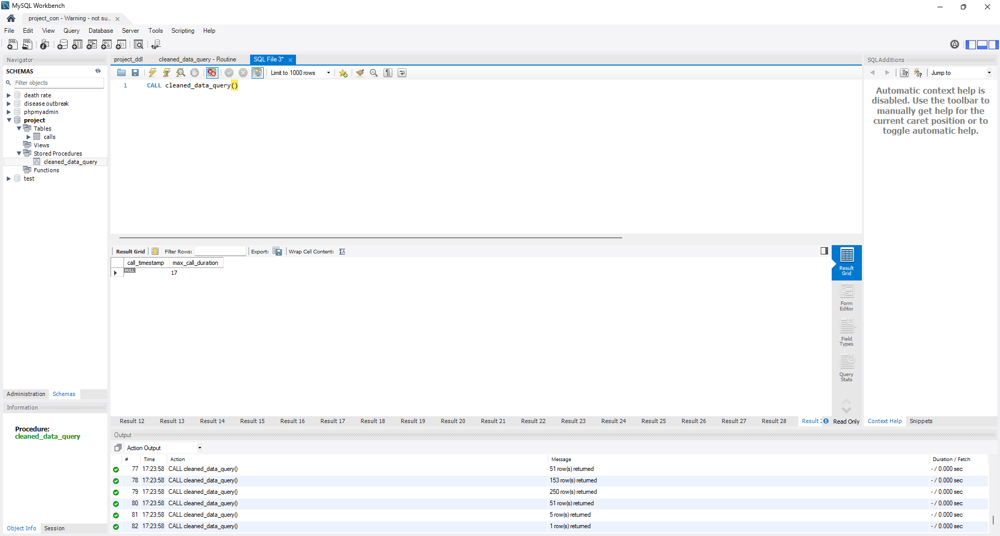

Overview
This final task presents a complete data analytics workflow using SQL, focusing on data preparation, cleaning, and exploratory analysis of a call center dataset. It demonstrates how raw CSV data can be transformed into a structured database and analyzed to generate meaningful insights that support data-driven decision-making.
01
Data Preparation
- Download and examine the dataset (Callcenter.csv) using Excel
- Set up the database environment using XAMPP and MySQL Workbench
- Create a schema and design a table structure that matches the dataset
- Import the CSV file into the database using the Table Data Import Wizard
- Ensure proper column mapping and data type alignment for accurate storage
02
Data Cleaning and Analysis
- Convert incorrect data formats (e.g., transforming string dates into proper date format)
- Handle missing and inconsistent values such as replacing zero values with NULL
- Use SQL queries to analyze distributions, trends, and key metrics (e.g., call volume, reasons, response time)
- Apply aggregations (min, max, average) and grouping to extract insights from the data
03
Final Output
- Generate meaningful insights such as busiest call days, most common call reasons, and performance metrics
- Present query results clearly through tables and screenshots
- Export SQL queries and outputs as proof of analysis
- Showcase the complete workflow from raw data to actionable insights in the portfolio
04
Output Files
Stored Procedure
